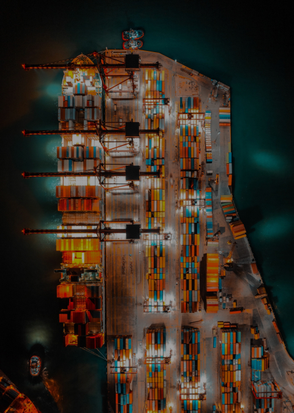
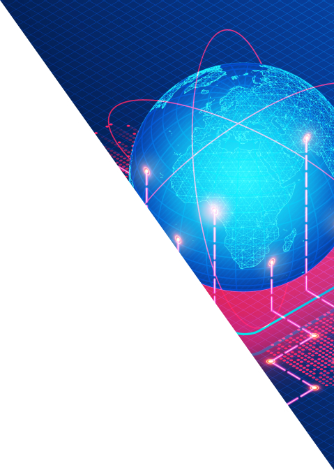

<style>
  #why-totrak-page {
    display: grid;
    grid-template-columns: repeat(3, 33.33%);
    background-color: #091939;
  }
  #why-totrak-page img {
    width: 100%;
    max-width: 100%;
    max-height: 100vh;
    aspect-ratio: 480 / 873;
  }
  .why-totrak-page--img-label {
    position: absolute;
    bottom: 3rem;
    font-size: 3rem;
    color: var(--gray-3);
    margin-left: 0.75em;
    margin-bottom: 1em;
    width: 15ch;
  }
  #why-totrak-page--asset-tracking-img {
    clip-path: polygon(0% 0%, 100% 0%, 100% 100%);
  }
  #why-totrak-page--label__asset-tracking {
    width: 10ch;
  }
  .why-totrak-page--container:hover * {
    color: white;
  }
  #why-totrak-text-container {
    position: absolute;
    top: 2rem;
    left: 2rem;
    color: white;
    display: flex;
  }
  #why-totrak-page--text {
    font-size: 2rem;
  }
  #why-totrak-page--logo {
    position: absolute;
    top: -3.5rem;
    margin-left: 0.5rem;;
  }

  @media (max-width: 768px) {
    .why-totrak-page--img-label {
      font-size: 1.5rem;
      margin-bottom: 0;
    }
  }
</style>


<section id="why-totrak-page" class="page-section">
<div class="why-totrak-page--container">
  
  <div class="why-totrak-page--img-label">Cold Chain Monitoring</div>
  <div id="why-totrak-text-container">
    <span id="why-totrak-page--text">WHY</span>
    <span></span>
  </div>

</div>

<div class="why-totrak-page--container">
  
  <div class="why-totrak-page--img-label">Live Shipment Monitoring</div>
</div>

<div class="why-totrak-page--container">
  
  <div id="why-totrak-page--label__asset-tracking" class="why-totrak-page--img-label">Asset Tracking</div>
</div>
</section>
